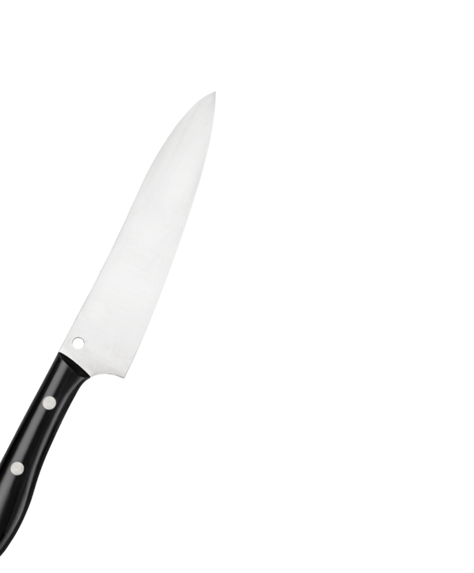
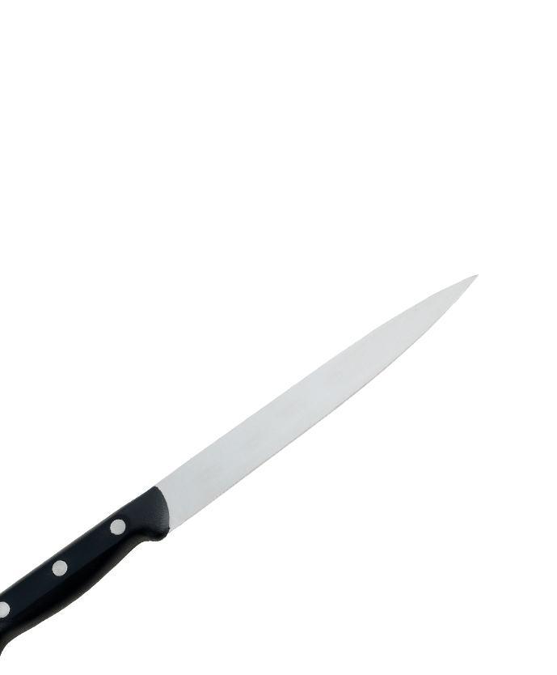
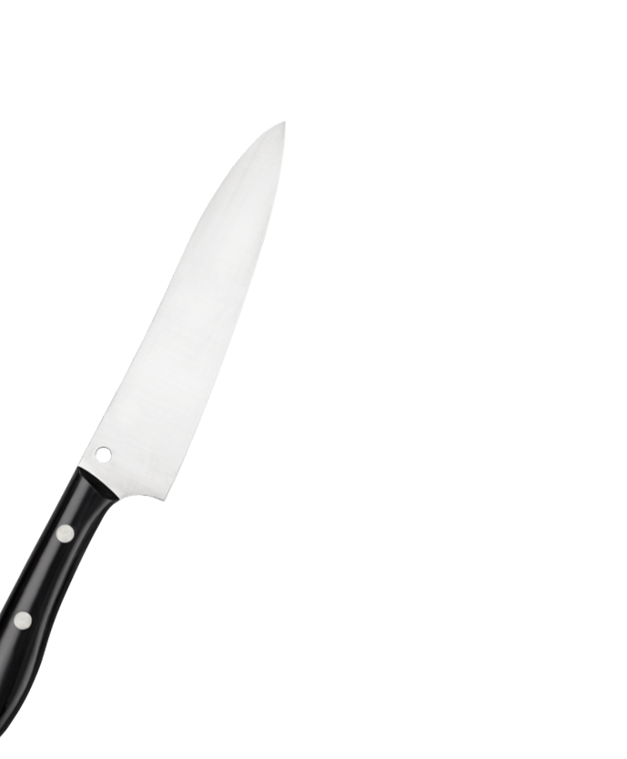
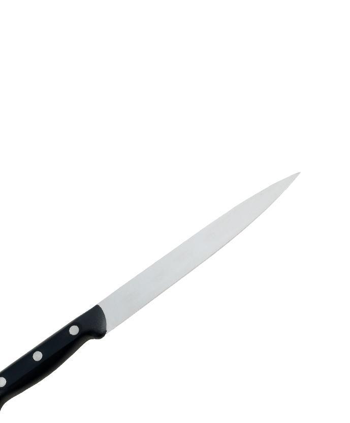

Студия заточки "Самура"
Кусачки быстро тупятся или цепляют? Мастер сильно стачивает лезвие? Мы никогда не стачиваем полотно и не портим инструмент. Наша заточка долго держится, кусачки не цепляют и имеют мягкий, плавный ход. Нас рекомендуют мастера и профессионалы. Закажите заточку у нас!
Закажите заточку прямо сейчас
+7(929) 675-97-01Почему выбирают нас
Наши мастера - лучшие в г. (какой город?). Мы знаем, какого качества заточку вы хотите.
Острый инструмент
Внутренние плоскости инструмента растачиваются на алмазном диске и доводятся до зеркального блеска, чтобы создать ровные внутренние плоскости – так можно получить идеальное схождение режущих кромок. Кончики острые, режут идеально. Полотна не разъезжаются и не цепляют. Каждый инструмент доводится до идеальной остроты.
Заточка надолго
Наша заточка держится при активной работе 1,5 - 2 месяца. Технология заточки маникюрного инструмента выработана на протяжении многих лет. Мы постоянно совершенствуем методы работы. Мастера студии «Самура» гарантируют качество и несут ОТВЕТСТВЕННОСТЬ за ваш инструмент. Ведь от инструмента зависит качество вашей работы!
Точим быстро
Все заказы испольняем очень быстро, в зависимости от объема работ. При этом качество работы не страдает. Мы никогда не стачиваем полотно. Инструмент будет работать долго, ход будет мягкий, как по маслу. Вы будете быстро делать маникюр и ничего не будет цеплять. Учтем все ваши пожелания.
Обучение заточке
Мы обучаем заточке инструмента. Делимся всеми секретами и многолетним опытом. В нашей студии вы можете научиться точить всё, а в особенности маникюрные и парикмахерские инструменты. Наши самые успешные ученики остались работать у нас в штате, а некоторые из них даже открыли свои студии.
Вызов курьера
Очень удобно, вы экономите своё драгоценное время. У нас есть курьеры, которые своевременно приедут к вам, оперативно отвезут инструмент в нашу студию, что бы заточить его и доставят вам его обратно.
Положительные отзывы
Наша заточка имеет высокую оценку и множество положительных отзывов на Яндекс.Картах. Вы получаете идеальный инструмент. Если Вам понравится, вы обязательно вернетесь к нам снова, и будете нашим постоянным клиентом. Поэтому мы работаем качественно!
 




Точим всё!
Мы профессионально заточим все, что режет: Щипчики кутикульные, парикмахерские ножницы, филировочные ножницы, кухонные ножи, медицинский инструмент, охотничьи и кухоные ножи, портняжные ножницы, бытовой и др. инстумент.
Если вам нужен инструмент бритвенной остроты - заказывайте заточку у студии "Самура".